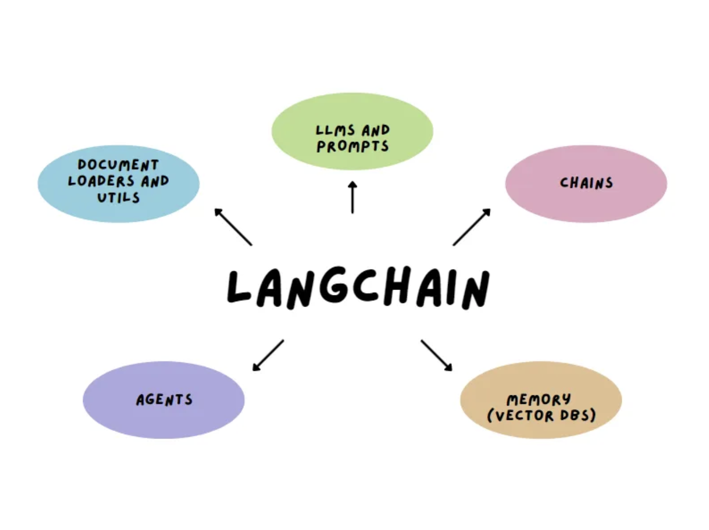

Large Language Models: - Large describes the size of these models based on the training data and parameters. - Language model describes the computer algorithm trained to receive written text and to create an output. - Large language models are trained on vast amounts of text and have learned from the patterns in large data sets.
Fun Fact : Most models are better at English than they are in other languages because of the prevalence of English in training models.
How Does LangChain Come Into Play

On October 22, 2022, Harrison Chase was the first the publish the first commit on GitHub for the LangChain open source library. LangChain was created after discovering that LLM applications needed to use LLMs together with “other sources of computation or knowledge”. It creates simple abstractions for each major prompting technique.
Getting Set Up With LangChain
I’ll be referencing O’Reilly “Chapter 1.LLM Fundementals With LangChain” if you want to follow along! We’re going to learn how to work with LangChain’s building blocks to understand more about LLM concepts. LangChain has two interfaces to interact with any LLM API provider - Chat models - LLMS
Example 1: I’m at a Capital One..”
Code
from langchain_openai.chat_models import ChatOpenAI
model = ChatOpenAI(model=“gpt-3.5-turbo”)
response = model.invoke(“I’m at a capital one”) print(response)
Let’s break this response down. 1. The Main Response is (content)
“bank branch. How can I assist you today”
This is the actual AI-generated response to the input “I’m at a capital one” –> AI responds: “bank branch. How can I assist you today?”
The model recognized Capital One as a bank and responded.
Additional Information
additional_kwargs={‘refusal’: None}
This is an extra metadata field and it suggests that the model did not reguse to answer the question
Token Ussage
This gives token usage stats
prompt_tokens:13 is the input that used 13 tokens
completion_tokens:11 is the model’s response using 11 tokens
total_tokens:24 is the total tokens used for the request
Model information
The request was processed using GPT-3.5-turbo-0125, a specific version of OpenAI’s GPT-3.5.
Was the response correct to what I was trying to say
Um… actually not. I was trying to tell the audience “I’m at a Capital One cafe drinking a caramel latte and completing my blogs” but I understand why it generated that message. Capital one is a bank, and there are assistants that ask if we need help with any services. I rate it a 7/10 response!
Other Useful Parameters
temperature Controls the sampling algorithm for the output. The lower the value, the more predictable outputs. Higher values generate more creative results.
max_tokens This limits the size and cost of the output. A lower value causes the LLM to stop generting properly..
System Role vs User Role vs Assistant Role
System Role Used for instructions the model should use to answer
User Role Used for the user’s query and other stuff created by the user
Assistant Role Used for content generated by the model
Chat models have different types of chat messaging interfaces with the roles listed above and here are some of the following:
HumanMessage (User Role) A message sent from the perspective of a human
AIMessage (Assistant Role) A message sent from the perspective of the AI that the human is interacting with
SystemMessage (System Role) A message setting the instructions that AI should follow
ChatMessage A message allowing for arbitrary setting of role
Same Messages, Different Fonts
HumanMessage
Code
from langchain_openai.chat_models import ChatOpenAI from langchain_core.messages import HumanMessage
model = ChatOpenAI() prompt = [HumanMessage(“I’m not completely sure what I should do for my spring break trip, what should I do and who should I go with?”)]
model.invoke(prompt)
Output
“There are many options for spring break trips depending on your interests and budget. Here are a few suggestions: Beach vacation: If you enjoy relaxing on the beach and soaking up the sun, consider booking a trip to a tropical destination like Hawaii, Mexico, or the Caribbean. You can go with friends, family, or even solo. Adventure trip: If you’re looking for a more active vacation, consider going on a hiking or camping trip. You could explore national parks like Yellowstone or Yosemite, or go on a backpacking trip in a new country. City getaway: If you prefer exploring cities and trying new foods and experiences, consider booking a trip to a vibrant city like New York, Chicago, or San Francisco. You could go with a group of friends or your significant other. Ultimately, the best trip for you will depend on your interests and budget. Consider talking to friends and family members to get their recommendations, and don’t be afraid to try something new and exciting. Just remember to plan ahead and make sure you have everything you need for a safe and enjoyable trip.”
Additional Info
dditional_kwargs={‘refusal’: None}, response_metadata={‘token_usage’: {‘completion_tokens’: 222, ‘prompt_tokens’: 33, ‘total_tokens’: 255, ‘completion_tokens_details’: {‘accepted_prediction_tokens’: 0, ‘audio_tokens’: 0, ‘reasoning_tokens’: 0, ‘rejected_prediction_tokens’: 0}, ‘prompt_tokens_details’: {‘audio_tokens’: 0, ‘cached_tokens’: 0}}, ‘model_name’: ‘gpt-3.5-turbo-0125’, ‘system_fingerprint’: None, ‘finish_reason’: ‘stop’, ‘logprobs’: None}, id=‘run-ca796ee2-d279-4e51-9c93-fce7fba98470-0’, usage_metadata={‘input_tokens’: 33, ‘output_tokens’: 222, ‘total_tokens’: 255, ‘input_token_details’: {‘audio’: 0, ‘cache_read’: 0}, ‘output_token_details’: {‘audio’: 0, ‘reasoning’: 0}})
SystemMessage
Code
from langchain_core.messages import HumanMessage, SystemMessage from langchain_openai.chat_models import ChatOpenAI
model = ChatOpenAI() system_msg = SystemMessage( ’‘’You are a travel assistant who gets a big commission if you help clients book trips that they love.’’’ ) human_msg = HumanMessage(‘I am not completely sure what I should do for my spring break trip, what should I do and who should I go with?’)
model.invoke([system_msg, human_msg])
Output
“Planning a trip for spring break sounds like a great idea! To determine what you should do and who you should go with, it’s important to consider your interests, budget, and preferred travel style. Here are a few questions to help guide your decision-making process: 1. What type of experience are you looking for? Are you seeking relaxation on a beach, an adventure-filled trip, cultural exploration, or something else entirely? What is your budget for the trip? This will help narrow down destinations and activities within your financial means. Do you prefer traveling solo, with friends, with family, or with a partner? Consider who you would enjoy spending time with and who shares similar interests. Are there any specific destinations you’ve always wanted to visit or activities you’ve been wanting to try? Spring break is a great opportunity to tick off items on your bucket list. Once you’ve thought about these questions, feel free to share some more details about your preferences, and I can help suggest specific destinations and activities that align with your interests. Let’s make sure your spring break trip is one to remember!”
Additional Info
, additional_kwargs={‘refusal’: None}, response_metadata={‘token_usage’: {‘completion_tokens’: 226, ‘prompt_tokens’: 57, ‘total_tokens’: 283, ‘completion_tokens_details’: {‘accepted_prediction_tokens’: 0, ‘audio_tokens’: 0, ‘reasoning_tokens’: 0, ‘rejected_prediction_tokens’: 0}, ‘prompt_tokens_details’: {‘audio_tokens’: 0, ‘cached_tokens’: 0}}, ‘model_name’: ‘gpt-3.5-turbo-0125’, ‘system_fingerprint’: None, ‘finish_reason’: ‘stop’, ‘logprobs’: None}, id=‘run-d4d25e15-68a9-490b-b7e5-31b3365322e6-0’, usage_metadata={‘input_tokens’: 57, ‘output_tokens’: 226, ‘total_tokens’: 283, ‘input_token_details’: {‘audio’: 0, ‘cache_read’: 0}, ‘output_token_details’: {‘audio’: 0, ‘reasoning’: 0}})
Analysis of Responses
The HumanMessage sounds very suggestive and informal. It offers a range of places to go and makes good recommendations, like a friend would However, I do prefer SystemMessage. This is no surprise as I gave it the model of being a really good travel agent. It asks the correct questions to dig into what type of trip I want. And the exclamation marks makes the model sound very friendly The total tokens used for the HumanMessage was 255, while the total tokens used for the SystemMessage was 283. More tokens were used for the SystemMessage, and I’m curious to see if it’s because I set a specif model or if the response was more creative. More food for thought!
Making LLM Prompts Reusable
We just did a lot of prompting, but now let’s try to de more of a detailed prompt:
Answer the question based on the context listed below. If the question cannot be answered with the information given, answer with “Sorry I do not know”.
Context: There are many different types of coffees, but I particularly love very strong coffee taste.
Question: What coffee should I try
It looks simple… but it is a bit hard to figure out what the text should contain and how it should create the response based on the user’s input. Lucikly, LangChain provides prompt template interfaces to create answers with dynamic inputs:
Code
from langchain_core.prompts import PromptTemplate
template = PromptTemplate.from_template(“““Answer the question based on the context listed below. If the question cannot be answered with the information given, answer with”Sorry I do not know”.
Context: {context}
Question: {question}
Answer: “““)
template.invoke({ “context”: “““There are many different types of coffees, but I particularly love very strong coffee taste.”““,”question”: “What coffee should I try?” })
The template can be used as a base for building multiple static, specific prompts. When you format the prompt with specific values, context and question, you get a static prompt ready to be passed into an LLM. Let’s feed it into an LLM OpenAI model using LangChain:
from langchain_openai import OpenAIfrom langchain_core.prompts import PromptTemplatefrom langchain.chains import LLMChain # This is necessary for linking the prompt and modelfrom dotenv import load_dotenv# Load API key_ = load_dotenv()# Define the prompt templatetemplate = PromptTemplate.from_template("""Answer the question based on the contextlisted below. If the question cannot be answered with the information given, answer with "Sorry I do not know".Context: {context}Question: {question}Answer:""")# Initialize the modelllm = OpenAI()# Create a chain that uses the prompt and the modelchain = LLMChain(prompt=template, llm=llm)# Now invoke the chain with your inputresponse = chain.invoke({"context": "There are many different types of coffees, but I particularly love very strong coffee taste.","question": "What coffee should I try?"})print(response['text']) # This prints the generated answer
Sorry I do not know.
Analysis
The LangChain chain is responding with “Sorry I do not know” because LangChain + Open AI models follows instructions closely. If my context doesn’t contain a specific, answerable detail related to the question, the model will default to my fallback instruction.
There are ways to fix this or test this.
I could make sure the context actually answers the question
Soften or remove the fallback instructions in the prompt.
I’ll remove the fall back to see what happens.
from langchain_openai import OpenAIfrom langchain_core.prompts import PromptTemplatefrom langchain.chains import LLMChain # This is necessary for linking the prompt and modelfrom dotenv import load_dotenv# Load API key_ = load_dotenv()# Define the prompt templatetemplate = PromptTemplate.from_template("""Answer the question based on the contextlisted below. ".Context: {context}Question: {question}Answer:""")# Initialize the modelllm = OpenAI()# Create a chain that uses the prompt and the modelchain = LLMChain(prompt=template, llm=llm)# Now invoke the chain with your inputresponse = chain.invoke({"context": "There are many different types of coffees, but I particularly love very strong coffee taste.","question": "What coffee should I try?"})print(response['text']) # This prints the generated answer
You should try an espresso or a dark roast coffee for a strong coffee taste.
Analysis
There it goes! It said I should try an espresso or a dark roast coffee for a strong coffee taste. Without the fall back parameter, I think this could be a super useful tool if you can prompt it correctly.
In this post, I explored how LangChain enables deeper interactions with large language models by combining prompts, context, and logic into structured pipelines. LangChain made this possible by letting me structure the interaction with a prompt template and link it to a language model (OpenAI), creating a system that could answer questions based on specific data and even self-limit when information was missing. This balance between control and creativity is what makes LangChain so powerful—and worth exploring for anyone working with AI-driven workflows.